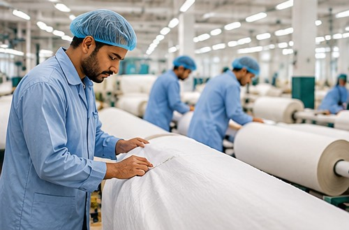

Company address
01 KM Jaranwala Road
Khurrianwala, Faisalabad
Pakistan
Contact Bismillah Textiles or visit our manufacturing campus in Faisalabad, Punjab, Pakistan.
01 KM Jaranwala Road
Khurrianwala, Faisalabad
Pakistan
GM Marketing
+92 41 242 8888 Ext. 102

Product category, intended application, material preferences, size or weight, estimated quantity and target timeline are useful starting points.